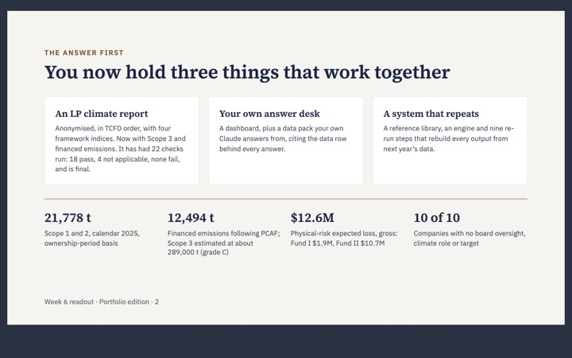
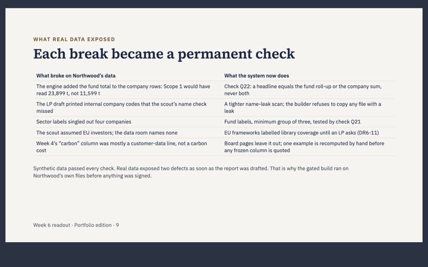
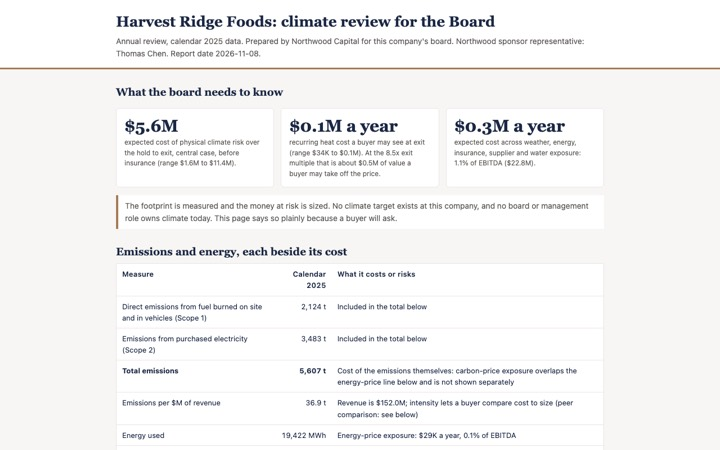

Week 6 of 6, Climate Work Residency
Disclosure as a service
How can Northwood answer LPs' and buyers' climate questions now, and keep doing it next year without Kith?
Highlights

Readout deck, slide 2
The answer first: the three things delivered and the four headline figures.
Open
Readout deck, slide 9
What real data exposed: each failure on Northwood's data became a permanent check.
Open
LP climate report
The anonymised report for limited partners, in TCFD order, with the figures drawn from one data table.
Open
Harvest Ridge board page
One company's page for its own board: emissions beside cost, risk as a share of EBITDA, and what is missing, stated plainly.
OpenThe case
Northwood needed a climate disclosure it could keep producing, not a one-off report. I delivered an anonymised LP report in TCFD order, a dashboard with a data pack Sarah's own Claude can answer from, a board page for each of the ten companies, and a library with nine re-run steps.
The headline: 21,778 t of Scope 1 and 2, about $12.6M of physical expected loss over the hold, and no company with board oversight, a climate role or a target. A buyer will ask about that last point, so the report says it plainly. Nothing has been sent to any LP; that stays Northwood's decision.
All deliverables
Each opens in a new tab, in the Kith Climate style it was delivered in.
- Week 6 portalThe entry page for every Week 6 deliverable, with audience tags.
- Readout deckThe close-out, with speaker notes.
- LP climate reportGovernance, strategy, risk management, metrics and targets, with the aggregate data rows.
- Framework content indicesIFRS S2, ESRS E1, SFDR PAI and ILPA EDCI requirements, met or not, and where.
- QA resultThe 22 quality checks run on the final report.
- LP report guideHow the report is made and rebuilt.
Show all 34
- Climate disclosure dashboardOverview, companies, coverage and gaps, applicability and data requests.
- Query pack rulesThe rules Sarah's Claude follows: answer only from the files, cite the row.
- Dashboard guideWhat each file is and how to rebuild.
- Board pages guideThe board-level rules, the page checks and what is open per page.
- Board page: Clearview Environmental ServicesFund II board page.
- Board page: Harvest Ridge FoodsFund II board page.
- Board page: Keystone Behavioral HealthFund II board page.
- Board page: Meridian Business SolutionsFund I board page.
- Board page: NovaCare Health PartnersFund I board page.
- Board page: Patriot Staffing SolutionsFund II board page.
- Board page: Pinnacle Testing and InspectionFund II board page.
- Board page: Ridgeline Property ServicesFund II board page.
- Board page: Sterling Precision ManufacturingFund I board page.
- Board page: Trident IT SolutionsFund I board page.
- Register guideThe files, the evidence map and the applicability answers, and how to re-run.
- Coverage matrixEach concept against the framework requirements that need it.
- Data requestsThe 16 requests: who is asked, for what, and why it matters.
- Engagement playbookEight stages, what the client gives at each, and the QA protocol.
- Framework freshnessEach framework by tier, how it was verified and when to check again.
- Framework notesStatus, pitfalls and defensible wording for each framework.
- Methodology notesMateriality scoring, the data-quality rubric, anonymisation, and the Scope 3 and financed-emissions method.
- Applicability methodHow the screen decides yes, no, unknown or monitor, and why a missing fact is never a no.
- Questions for counselSix questions on whether CSRD reaches a US private-equity structure.
- Process logHow the week ran, what worked and what did not.
- Week 1 reconciliationEach Week 1 promise, what was delivered and the reason for any different route.
- Pricing reflectionFixed versus per-company work.
- Re-run noteNine commands that rebuild every output from next year's files.
- Hand-off notesActions handed to Northwood with owners, and the judgments to keep.
Data and method
The method notes, data and re-run steps that let the client reproduce the work without us.
- Readout deck (PDF)PDFThe deck printed to PDF.
- Delivery lineageCSVWhich source file each delivered page was built from.
How it was built
- One pipeline ran all ten companies. The register maps 32 concepts across four frameworks (352 evidence cells, 104 applicability answers) and lists 16 data requests, so a gap is shown, never counted as a no.
- The LP report passed 22 checks (18 pass, 4 not applicable in Year 1, none fail), and each check has a test that proves it can fail. A clean re-run from the pinned inputs alone rebuilds every final file identically.
- Real data exposed two defects the synthetic test data had hidden: the engine added the fund total to the company rows (Scope 1 would have read 23,899 t, not 11,599 t), and the draft printed internal company codes. Each became a permanent check.
- Reviewers raised 41 findings over two rounds, 12 of them must-fix. 40 were fixed; one is carried and disclosed (the pricing reflection names no fee). Scope 3 (about 289,000 t, grade C) is a spend-based estimate and is not added to Scope 1 and 2.
- In the portfolio review I re-read the framework statuses: 16 of 48 requirements were marked met as delivered, and 9 hold on review. Both counts are shown, and no figure changed.
My part
- I decided that the LP report is anonymised and the dashboard is named for Sarah, and chose a static dashboard plus query pack as the real leave-behind.
- I ruled that departing from a Week 1 promise was fine if the reason is explained, and the process log does that for each departure.
- I named Sarah Mitchell as the responsible executive in the governance section, and set the Scope 3 and financed-emissions approach at close-out.
- I held pricing to the end, and approved the framework tiers.
The AI's part
- Claude, working in a blank sandbox first, built a generic disclosure library, which was then applied to Northwood's data.
- Claude built the engine, the LP report, the dashboard and query pack, the ten board pages and the QA checks.
- Claude ran the reviewers. They caught a claim that the model was checked against company events before use, when in fact five of nine passed first time, and a decision credited to Northwood that was mine. Both were corrected.
- Two separate Claude sessions tested the query pack cold and found nine gaps.
Across the engagement
From Week 5. Week 5 supplied the physical-risk expected loss over the hold and its method; Week 3 supplied the emissions; Week 4's exposure model supplied each board page's risk as a share of EBITDA. Recomputing one Week 4 column by hand showed it was mostly a customer-data line, not a carbon cost, so the board pages leave it out.